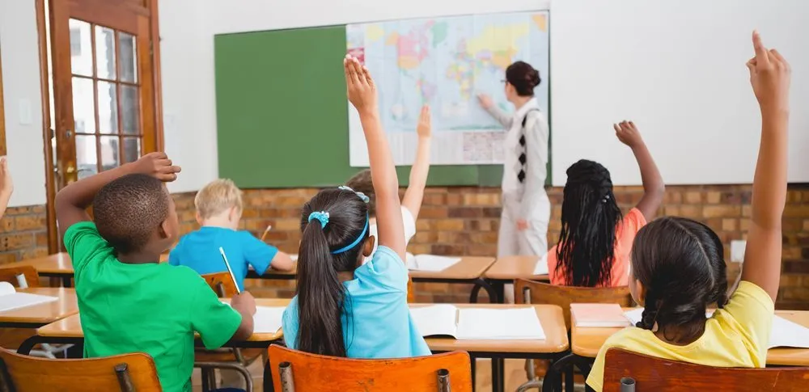
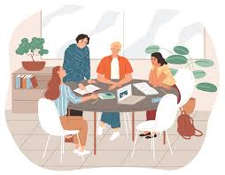
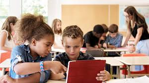
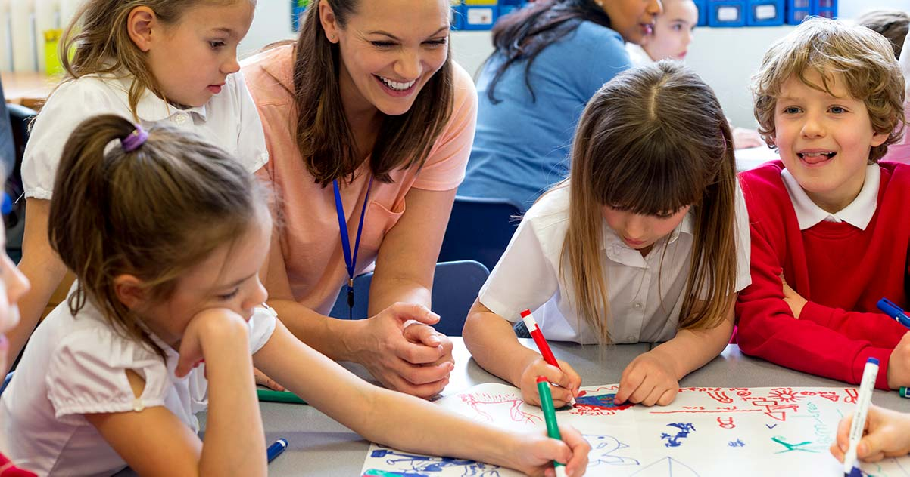

Equal Education opportunities

1. What is Equal Access to Education

Equal access to education means that every individual has the right to receive quality education without facing discrimination based on gender,
income, location, disability, or social background.
It ensures that all learners are given the same opportunities to attend school, participate in learning activities,
and achieve academic success.
Education is considered a fundamental human right because it empowers individuals with knowledge, skills, and confidence.
When education is accessible to everyone, it helps reduce inequality, improve living standards, and create a more just and inclusive society.
Equal access also promotes social mobility, allowing individuals from disadvantaged backgrounds to improve their future.
In today's world, equal education also includes access to digital learning resources, technology, and modern teaching methods, which are essential for preparing students for global challenges.
Key Statistics
- Around 244 million children and youth worldwide are out of school (UNESCO).
- Only about 6 in 10 young people globally complete secondary education.
Global Fact
- The United Nations Sustainable Development Goal 4 (SDG 4) aims to ensure inclusive and equitable quality education for all by 2030.
2. Barriers to Education Around the World
Despite global efforts, many children still face significant barriers to education. One of the most common barriers is poverty.
Families with limited income may not be able to afford school fees, uniforms, books, or transportation.
As a result, children are often forced to work instead of attending school.
Geographical location is another major issue. In rural or remote areas, schools may be far away or completely unavailable.
Lack of infrastructure, such as proper classrooms and trained teachers, also affects the quality of education.
Additionally, conflicts, natural disasters, and political instability disrupt education systems in many countries. Children living in these conditions
often miss years of schooling. Social and cultural factors, including discrimination and traditional beliefs, can also prevent certain groups from accessing education.
These barriers highlight the need for global efforts to ensure that education is accessible and inclusive for all.
Key Statistics
- About 70% of out-of-school children live in low-income countries.
- In some regions, children in rural areas are twice as likely to miss school compared to urban areas.
Global Fact
-
In conflict-affected countries,
children are more than twice as likely to be out of school compared to those in peaceful regions.
3. Gender Equality in Education

Gender equality in education means providing equal learning opportunities for both boys and girls.
While progress has been made, gender inequality still exists in many parts of the world. Girls,
in particular, face challenges such as early marriage, household responsibilities,
and safety concerns when traveling to school.
Cultural beliefs and societal expectations sometimes prioritize boys education over girls,
limiting opportunities for female students.
This results in lower enrollment and completion rates for girls in some regions.
Promoting gender equality in education is essential because it leads to positive social and economic outcomes.
Educated women are more likely to participate in the workforce, make informed decisions,
and contribute to their communities. Furthermore, educating girls has a direct impact on improving family health,
reducing poverty, and supporting sustainable development.
Ensuring gender equality requires supportive policies, safe learning environments,
and awareness programs that encourage equal participation in education.
Key Statistics
- Around 129 million girls worldwide are out of school.
- In some countries, girls are less likely to complete secondary education than boys.
Global Fact
-
Educating girls can increase a country's economic growth and reduce poverty,
as educated women are more likely to work and support their families.
4. How Scholarships and Community Support Help
Scholarships and community support play a crucial role in reducing educational inequality. Scholarships provide
financial assistance to students who cannot afford education, allowing them to continue their studies without economic
pressure.
These programs help talented students achieve their goals regardless of their financial situation.
Community support initiatives, such as building schools, donating educational materials, and organizing awareness campaigns,
also improve access to education.
Local communities often work together to create safe and supportive learning environments.
Non-governmental organizations (NGOs) and international agencies contribute by funding educational programs,
training teachers, and promoting inclusive education policies.
These efforts help bridge the gap between privileged and disadvantaged students.
Overall, scholarships and community support create opportunities,
improve educational access, and empower individuals to build a better future.
Key Statistics
- Scholarship programs have helped increase school enrollment in some regions by up to 30%.
- Community-based education programs can significantly improve attendance in rural areas.
Global Fact
-
Organizations like NGOs and local communities help build schools, provide books,
and train teachers in developing countries.
5. Actions Students Can Take

Students themselves can contribute to promoting equal education in many ways. One important action is
supporting peers by sharing knowledge, helping classmates, and encouraging collaborative learning.
This creates a positive and inclusive learning environment.
Students can also raise awareness about educational inequalities through discussions, social media, and school activities.
Participating in community service projects, volunteering,
and educational campaigns can help support underprivileged learners.
Additionally, students can use technology to access and share educational resources, making learning more accessible to others.
Being respectful, inclusive, and
supportive towards classmates from different backgrounds also plays a key role in promoting equality.
Even small actions taken by students can have a meaningful impact in creating a more fair and inclusive education system.
Key Statistics
- Peer learning and student support programs can improve academic performance by 10-20%..
- Youth-led awareness campaigns have increased school participation in many communities.
Global Fact
-
Students around the world are using social media and technology to
promote education rights and support global learning initiatives.